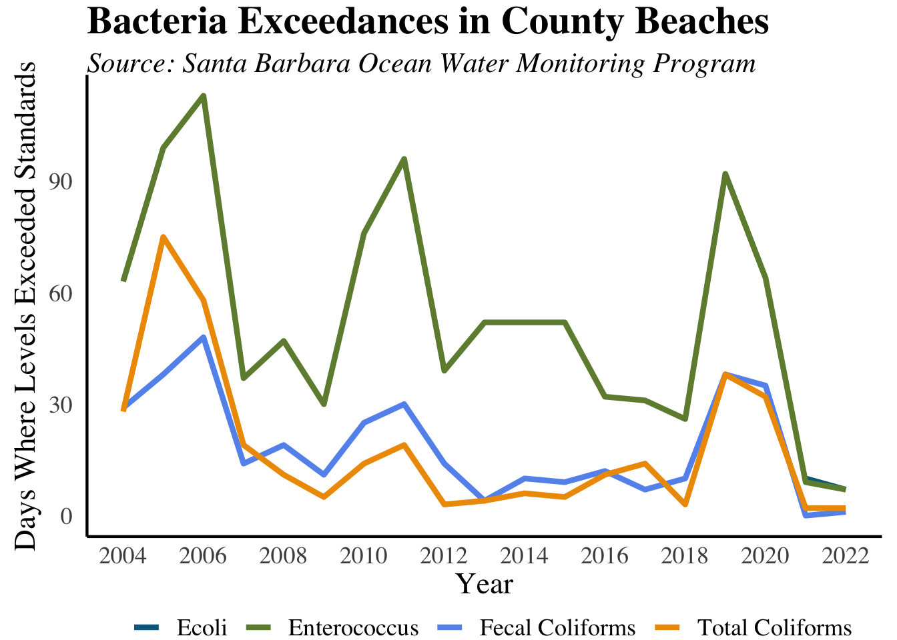

Environmental
Energy and Transportation
Residential Electricity Use Reach Highest in Decade
What is the measure?
The data displays the amount of electricity consumed by Santa Barbara County for non-residential and residential entities. The data is measured in gigawatt hours. One gigawatt hour equals one million kilowatt hours, enough energy to power roughly 90 households for a full year (based on the U.S. average of 11,000 kWh per household per year).
Why is it important?
Electric energy is a critical commodity, powering our homes and workplaces. The amount of electricity used can have significant environmental ramifications, particularly in terms of pollution and resource consumption. The overall impact of electricity usage is largely contingent on how it is generated, a factor that can vary significantly from one county and state to another.
Residential Gas Use Remains Relatively Stable
What is the measure?
The gas consumed annually by Santa Barbara County comes from the California Energy Commission. The data is expressed in millions of therms. Natural gas is used most often by households through heating and cooking. It can also be used to produce electric power.
Why is it important?
Natural gas consumption can have significant environment implications including greenhouse gas (GHG) emissions and air pollution. Understanding and monitoring natural gas consumed can help to mitigate environmental impacts and inform the county on how to reduce its emissions. Air pollution can also have public health impacts including respiratory problems and other health issues.
How are we doing?
Despite a growing population from 2010 to 2020 by over 20,000 individuals, total gas consumption has remained stable over the past two decades. This stability can be attributed to several factors, including greater use of energy efficient or completely electric appliances, the increasing integration of renewable energy sources into the county’s energy mix, and economic incentives driving individuals to reduce consumption due to higher costs. The county has outlined the goal to reduce GHG emissions by 50% below 2018 levels by 2030 in their Climate Action Plan. To meet this ambitious target, it’s imperative to identify and implement effective strategies.
Bus Ridership Sharply Declining
What is the measure?
The number of bus trips taken each year in Santa Barbara on Metropolitan Transit District (MTD) buses.
Water
Unpredictable Flooding in 2024
What are the measures?
The current and historical flooding data comes from the CDC and NASA’s Land, Atmosphere Near Real-time Capability for Earth Observing Systems (LANCE). The measure is an estimate of the total area flooded in Santa Barbara county each day in km^2. Santa Barbara County is just over 7,000 square kilometers of land area.
Why is it important?
Flooding events can pose significant risks to the public including increased car accidents, damage to property, and physical injury. It can also result in the exposure of harmful pathogens through contaminated flood waters. It is important for Santa Barbara County to monitor flood levels and prepare for flood related incidents in the event of extreme rainfall.
How are we doing?
Rainfall in Santa Barbara County is unpredictable, with the most flooding occurring from January to March. On January 26th, the flood area reached 65.3 square kilometers which could cover roughly 60% of the City of Santa Barbara. Heavy rain in 2023 and 2024 caused major flooding across the county, especially impacting South County. In January of 2023, a historic storm cause major flooding shut down Santa Barbara airport and even issued evacuations in the area.
Water Quality Violation Days Return to Stable Levels

What are the measures?
The number of weekly water quality tests that exceed state and federal standards for ecoli, fecal coliform, total coliform, and enterococcus. This data is from the County Ocean Water Monitoring Program, which tests ocean water near the mouth of most major creeks in the Santa Barbara County. A reading of more than 400 parts per million for fecal coliform, 104 for enterococcus, or 10,000 MPN (Most Probable Number, meaning the bacterial count per 100 mL of water) for total coliform exceeds state and federal standards, and can lead to a Department of Environmental Health Beach Advisory.
Why is it important?
The quality of water coming out of a watershed directly reflects what goes into the watershed and is an indicator of the watershed’s overall health. This not only affects the ability of residents to enjoy local creeks and beaches, but also affects the health of wildlife. In addition, unsafe beaches can adversely impact the local economy by reducing tourism.
How are we doing?
Water quality violation days remained relatively stable from 2013-2018, but 2019 saw a jump in both enteroccus and fecal coliform.The number of water quality violation days has fallen since, reaching the lowest numbers in over a decade. The amount of rainfall can significantly affect these results, as rainfall flushes bacteria and pollutants from the creeks into the ocean.
Air and Climate
PM Exceedences Return to 0
What are the measures?
The number of days each year that Santa Barbara County exceeded state and federal standards for PM10 and PM2.5 levels. This data comes from the Santa Barbara County Air Pollution Control District.
Why is it important?
Particulate matter is made up of fine particles in the air, such as those of dust, smoke, metal, and soot that can be harmful to humans’ lungs when inhaled. This pollutant is split up into two categories, PM10 and PM2.5. PM10 includes particles less than 10 microns in diameter and PM2.5 refers to much smaller particles that are no more than 2.5 microns in diameter. Because PM2.5 is much smaller, it can become lodged in the deepest parts of your lungs much more easily, making it a serious health threat, especially to people with respiratory diseases such as asthma and bronchitis. PM2.5 is caused primarily by vehicle emissions, burning of fuel, and wildfires. When PM2.5 is in the air there is much more caution that is necessary; when PM2.5 levels are high, people should limit outdoor exposure and exercising as much as possible. Additionally, if levels are particularly high or if one must go outside, it is beneficial to wear a mask with a filter.
How are we doing?
From 2007 - 2009, a series of devastating fires hit Santa Barbara County: the 2007 Zaca Fire, 2008 Gap Fire and Tea Fire, and the 2009 Jesusita Fire. In 2016 and 2017, another series of wildfires hit the county. The devastating Thomas Fire in 2017 was the largest fire in California records. PM2.5 exccedance days in 2017 and 2020 reached 10+ days, a sight that is highly unsusual. 2020 was the largest wildfire season to date in California, correlating to the most recent spike. Since then, exceedance levels have reterned to 0.
Average Temperatures are Rising
What is the measure?
The average annual temperatures from 1895 - 2022 in Santa Barbara County come from NOAA’s National Centers for Environmental Information. The data includes an aggregate of the daily average temperature from January to December of each year in degrees Fahrenheit.
Why is it important?
Temperature data can assist in monitoring the local impacts of climate change over time. The data can empower our community to take meaningful action in response to rising temperatures as a result of climate change.
How are we doing?
Average temperatures have been steadily rising since 1895. In 2014, the average temperature reached its peak at 61.8°F. The top 10 highest temperatures of the data were all within the past 10 years, with the exception of 1997 (8th) and 1992 (9th). The average temperature across the data was about 57°F, which we have not seen a value below since 1975. While temperature rise is a global concern, it is important for our community to monitor its effects and take action to reduce our impact on climate change.
Land
Total Waste Disposed Sees Slight Decline
What are the measures?
The total tons of waste disposed in the Tajiguas, Santa Maria, and Lompoc landfills, as well as the amount of green waste and recycling diverted from the landfills.
Why is it important?
Waste disposal is a major form of urban pollution. Growing populations cause the total amount of waste to increase. Changes in the local economy, consumer purchasing decisions, and recycling and composting efforts also affect the amount of waste.
How are we doing?
Since 2014, the total waste disposed in the Santa Maria landfill has been steadily increasing, totaling 125,188 pounds in 2018. Similarly, the Tajiguas landfill (which serves most of the South Coast) has seen a large upward tick in total waste disposed; since 2014, total waste has increased from 175,099 pounds to 239,004 pounds in 2018. Conversely, the Lompoc landfill has seen relatively steady waste disposal levels.
California had a statewide goal of reducing solid waste by 75 percent by 2020 through recycling, composting and source reduction. 2020 saw the highest levels of green waste per capita, with 197 pounds. One possible reason for this is that people spent more time gardening and renovating residential outdoor spaces during the Covid-19 stay-at-home orders. Recycling levels have remained relatively stable since 2015, except for a decrease in 2018 to 88 pounds per capita, the lowest level in our data.
County Losing Agricultural Land
What are the measures?
The data originates from the National Land Cover Database. This measure represents the percentage of Santa Barbara County’s total land area classified as “agriculture,” which includes both pasture/hay and cultivated crops. Pasture/hay areas consist of grasses or other plants grown for livestock grazing or hay production. Cultivated crops refer to land used for growing food or other agricultural products. In Santa Barbara County, the most common crops include strawberries, cauliflower, and wine grapes.
Why is it important?
The percentage of land in Santa Barbara County dedicated to agriculture is a valuable metric for understanding the county’s evolving economic and cultural landscape. Historically, Santa Barbara has been rooted in agriculture, and tracking this measure sheds light on the gradual shift towards urbanization. This transition influences not only the local economy but also the cultural heritage and social fabric of the community. Family farms and longstanding cultural connections to agriculture remain vital aspects of Santa Barbara’s identity. Monitoring agricultural land use helps preserve these traditions and supports informed decision-making regarding sustainable development and land use planning.
How are we doing?
Both metrics for agricultural land use in Santa Barbara County have been on the decline. The sharpest decline occurred between 2011 and 2016, with a significant 0.7% decrease in the area dedicated to cultivated crops. However, from 2016 to 2021, the usage of land for both cultivated crops and pasture/hay has stabilized, showing no further significant changes.
Nature
Total Bird Count Decreases in 2020
What is the measure?
The results of the Audubon Society’s annual Christmas Bird Count for four species. The bird count is designed as a measure of the diversity of bird species, but it can also be used as a rough indicator of how well bird species are thriving.
Five common species are reported - the American Crow, the California Quail, Nuttall’s Woodpecker, the Western Meadowlark, and the Wrentit. All of these species are resident birds, living in different local habitats.
Why is it important?
Bird populations are an important part of our local ecosystem, and generally reflect its overall health. Changes in the bird count can indicate changes in habitats or other shifts in the local environment. Decreased sightings of these local bird species are likely due to the loss of local chaparral and woodlands.
How are we doing?
The American Crow is consistently the species with the most sightings each year; 2013 saw the largest counts, with 2,336 sightings. Most recently, sightings were 958, a record low.
In 2015, Western Meadowlark sightings fell dramatically from 720 to 376, a 47 percent decline. This decrease is surprising considering the 129 percent increase seen from 2013 to 2014.
Similar to the Western Meadowlarks, the number of California Quails also fell by 26 percent moving from 2014 to 2015 after increasing considerably the years before. In 2020, California Quail sightings reached 340, the highest in over a decade.
Wrentit sightings have typically stayed between the range of 100-200 sightings since 2003, except for a particularly low count of 79 in 2005. Sightings have steadily increased since 2016.
Nuttall’s Woodpecker is always the least common species to be reported; the lowest number ever reported was 17 in 2005 and the most sightings was in 2013 with just 84 sightings.